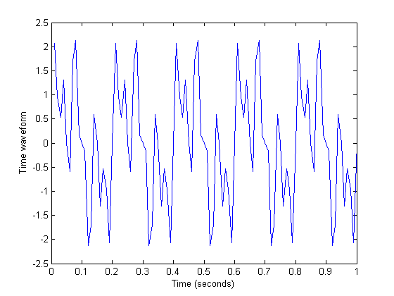
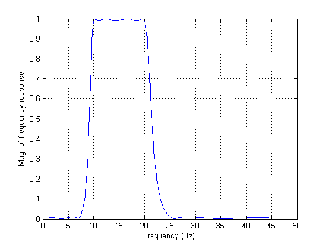
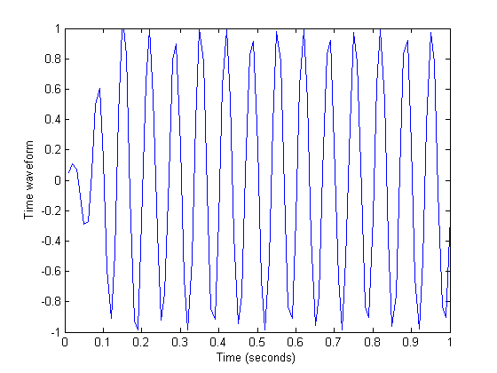
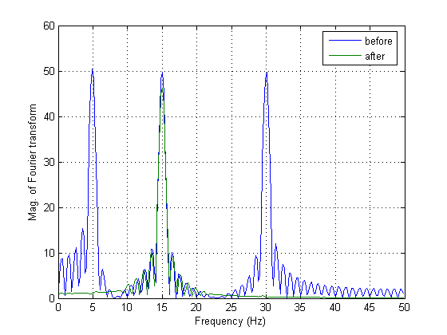

This demonstration designs a filter with the Signal Processing Toolbox and applies it to a signal made up of harmonic components.
Here's an example of filtering with the Signal Processing Toolbox. First make a signal with three sinusoidal components (at frequencies of 5, 15, and 30 Hz).
Fs = 100; t = (1:100)/Fs; s1 = sin(2*pi*t*5); s2=sin(2*pi*t*15); s3=sin(2*pi*t*30); s = s1+s2+s3; plot(t,s); xlabel('Time (seconds)'); ylabel('Time waveform');
To design a filter to keep the 15 Hz sinusoid and get rid of the 5 and 30 Hz sinusoids, we create an eighth order IIR filter with a passband from 10 to 20 Hz. Here is its frequency response. The filter was created with the ELLIP command.
[b,a] = ellip(4,0.1,40,[10 20]*2/Fs); [H,w] = freqz(b,a,512); plot(w*Fs/(2*pi),abs(H)); xlabel('Frequency (Hz)'); ylabel('Mag. of frequency response'); grid;
After filtering, we see the signal is a 15 Hz sinusoid, exactly as expected.
sf = filter(b,a,s); plot(t,sf); xlabel('Time (seconds)'); ylabel('Time waveform'); axis([0 1 -1 1]);
Finally, here is the frequency content of the signal before and after filtering. Notice the peaks at 5 and 30 Hz have been effectively eliminated.
S = fft(s,512); SF = fft(sf,512); w = (0:255)/256*(Fs/2); plot(w,abs([S(1:256)' SF(1:256)'])); xlabel('Frequency (Hz)'); ylabel('Mag. of Fourier transform'); grid; legend({'before','after'})